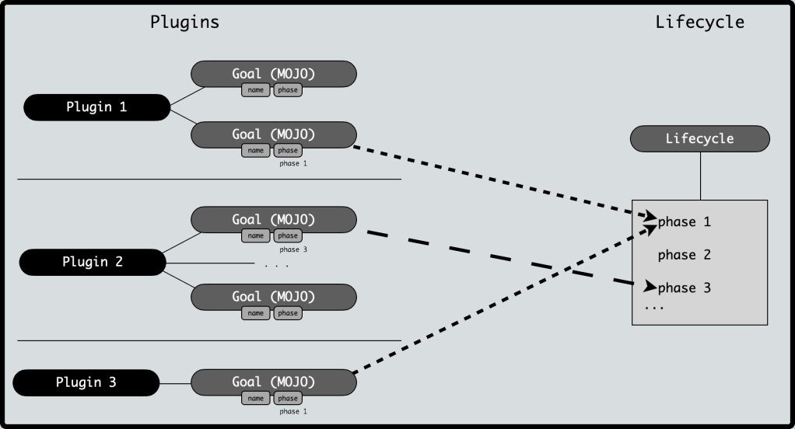

Maven プラグイン
Maven プラグインは、Maven の機能を拡張する実行可能なコンポーネントです。各プラグインには1つ以上のゴール（goals）が含まれており、特定のタスク（コンパイル、テスト、パッケージングなど）を実行します。
プラグインとライフサイクルの関係：
ライフサイクル（Lifecycle）：ビルドフェーズ（phase）の順序を定義します
プラグイン（Plugin）：これらのフェーズのタスクを完了するための具体的な実装（goal）を提供します

Maven には以下の3つの標準ライフサイクルがあります：
- clean：プロジェクトのクリーン処理
- default（または build）：プロジェクトのデプロイ処理
- site：プロジェクトサイトドキュメントの作成処理

各ライフサイクルには一連のフェーズ（phase）が含まれています。これらのフェーズは Maven が提供する統一インターフェースに相当し、これらのフェーズの実装は Maven プラグインによって行われます。
mvn コマンドを入力するとき、例えばmvn clean、clean は Clean ライフサイクル内の clean フェーズに対応します。ただし、clean の具体的な操作はmaven-clean-pluginによって実装されます。
つまり、Maven ライフサイクルの各フェーズの具体的な実装はすべて Maven プラグインによって実装されています。
Maven は実際にはプラグインに依存して実行されるフレームワークであり、各タスクは実際にはプラグインによって完了します。Maven プラグインは通常、次の目的で使用されます：
- jar ファイルの作成
- war ファイルの作成
- コードファイルのコンパイル
- コードのユニットテスト
- プロジェクトドキュメントの作成
- プロジェクトレポートの作成
プラグインは通常、ゴールの集合を提供し、以下の構文で実行できます：
<code>mvn [plugin-name]:[goal-name]</code>
例えば、Java プロジェクトは maven-compiler-plugin の compile-goal を使用してコンパイルできます。コマンドは次のとおりです：
<code>mvn compiler:compile</code>
プラグインのコアメカニズム
プラグイン座標
依存関係と同様に、プラグインも groupId、artifactId、version によって一意に識別されます：
| 属性 | 説明 | 一般的な値 |
|---|---|---|
groupId | プラグインの組織 | org.apache.maven.plugins（公式プラグイン） |
artifactId | プラグイン名 | maven-compiler-plugin |
version | プラグインのバージョン | 3.8.1 |
プラグインゴール（Goals）
各プラグインは複数のゴールを含むことができます。例えば：
maven-compiler-plugin：compile：メインコードのコンパイルtestCompile：テストコードのコンパイル
maven-surefire-plugin：test：ユニットテストの実行
プラグインのバインド方法
1、組み込みバインド
Maven はライフサイクルフェーズにプラグインゴールを事前にバインドしています：
| ライフサイクルフェーズ | バインドされたプラグインゴール |
|---|---|
compile | maven-compiler-plugin:compile |
test | maven-surefire-plugin:test |
package | maven-jar-plugin:jar（またはmaven-war-plugin:war） |
2、カスタムバインド
pom.xml で明示的に設定します：
<build>
<plugins>
<plugin>
<groupId>org.apache.maven.plugins</groupId>
<artifactId>maven-compiler-plugin</artifactId>
<version>3.8.1</version>
<executions>
<execution>
<phase>compile</phase> <!-- 绑定到 compile 阶段 -->
<goals>
<goal>compile</goal>
</goals>
</execution>
</executions>
</plugin>
</plugins>
</build>
一般的な公式プラグイン
コンパイル関連
| プラグイン | 役割 | 一般的なゴール |
|---|---|---|
maven-compiler-plugin | Java コードのコンパイル | compile, testCompile |
maven-resources-plugin | リソースファイルの処理 | resources, testResources |
設定例：
<plugin>
<groupId>org.apache.maven.plugins</groupId>
<artifactId>maven-compiler-plugin</artifactId>
<version>3.8.1</version>
<configuration>
<source>11</source> <!-- Java 版本 -->
<target>11</target>
</configuration>
</plugin>
テスト関連
| プラグイン | 役割 | 一般的なゴール |
|---|---|---|
maven-surefire-plugin | ユニットテストの実行 | test |
maven-failsafe-plugin | 統合テストの実行 | integration-test |
テストをスキップする設定：
<plugin>
<groupId>org.apache.maven.plugins</groupId>
<artifactId>maven-surefire-plugin</artifactId>
<version>2.22.2</version>
<configuration>
<skipTests>true</skipTests> <!-- 跳过测试 -->
</configuration>
</plugin>
パッケージング関連
| プラグイン | 役割 | 一般的なゴール |
|---|---|---|
maven-jar-plugin | JAR ファイルのパッケージング | jar |
maven-war-plugin | WAR ファイルのパッケージング | war |
maven-assembly-plugin | カスタムパッケージング | single |
実行可能 JAR の設定：
<plugin>
<groupId>org.apache.maven.plugins</groupId>
<artifactId>maven-jar-plugin</artifactId>
<version>3.2.0</version>
<configuration>
<archive>
<manifest>
<mainClass>com.example.Main</mainClass> <!-- 指定主类 -->
</manifest>
</archive>
</configuration>
</plugin>デプロイ関連
| プラグイン | 役割 | 一般的なゴール |
|---|---|---|
maven-install-plugin | ローカルリポジトリへのインストール | install |
maven-deploy-plugin | リモートリポジトリへのデプロイ | deploy |
プラグインの呼び出し方法
ライフサイクル経由で呼び出し：
mvn compile # 触发 maven-compiler-plugin:compile
プラグインゴールを直接呼び出し：
mvn compiler:compile # 直接调用编译目标
コマンドライン引数の設定：
mvn compiler:compile -Dmaven.compiler.source=11
プラグインのカスタム設定
パラメータ設定
を使用してconfigurationタグで設定：
<plugin>
<groupId>org.apache.maven.plugins</groupId>
<artifactId>maven-surefire-plugin</artifactId>
<version>2.22.2</version>
<configuration>
<includes>
<include>**/*Test.java</include> <!-- 只包含特定测试 -->
</includes>
</configuration>
</plugin>複数ゴールの実行：
<executions>
<execution>
<id>run-tests</id>
<phase>test</phase>
<goals>
<goal>test</goal>
</goals>
</execution>
</executions>
プラグイン開発の基礎
Mojo の概念
プラグインゴールに対応する Java クラスはMojo（Maven plain Old Java Object）。
継承する必要があり、
AbstractMojoそして実装するexecute()メソッド。
簡単なプラグインの例
例
public class GreetingMojo extends AbstractMojo {
@Parameter(property = "name", defaultValue = "World")
private String name;
public void execute() throws MojoExecutionException {
getLog().info("Hello, " + name + "!");
}
}
プラグインのパッケージングとインストール
mvn clean install # 将插件安装到本地仓库
プラグインの種類
Maven には以下の2種類のプラグインがあります：
| 種類 | 説明 |
|---|---|
| Build plugins | ビルド時に実行され、pom.xml の |
| Reporting plugins | サイト生成中に実行され、pom.xml の |
以下は一般的なプラグインのリストです：
| プラグイン | 説明 |
|---|---|
| clean | ビルド後にターゲットファイルをクリーンアップします。ターゲットディレクトリを削除します。 |
| compiler | Java ソースファイルをコンパイルします。 |
| surefile | JUnit ユニットテストを実行します。テストレポートを作成します。 |
| jar | 現在のプロジェクトから JAR ファイルをビルドします。 |
| war | 現在のプロジェクトから WAR ファイルをビルドします。 |
| javadoc | プロジェクトの Javadoc を生成します。 |
| antrun | ビルドプロセスの任意のフェーズから ant タスクのセットを実行します。 |
例
私たちはすでに例の中で数多く使用してきましたmaven-antrun-pluginコンソールにデータを出力するために。参照してくださいMaven - ビルドプロファイルの章を参照してください。この部分をより良く理解するために、C:\MVN\project ディレクトリに pom.xml ファイルを作成しましょう。
次に、コマンド端末を開いて pom.xml があるディレクトリに移動し、以下の mvn コマンドを実行します。
mvn clean
Maven は処理を開始し、clean ライフサイクルの clean フェーズを表示します。
[INFO] Scanning for projects...
[INFO] ------------------------------------------------------------------
[INFO] Building Unnamed - com.companyname.projectgroup:project:jar:1.0
[INFO] task-segment: [post-clean]
[INFO] ------------------------------------------------------------------
[INFO] [clean:clean {execution: default-clean}]
[INFO] [antrun:run {execution: id.clean}]
[INFO] Executing tasks
[echo] clean phase
[INFO] Executed tasks
[INFO] ------------------------------------------------------------------
[INFO] BUILD SUCCESSFUL
[INFO] ------------------------------------------------------------------
[INFO] Total time: < 1 second
[INFO] Finished at: Sat Jul 07 13:38:59 IST 2012
[INFO] Final Memory: 4M/44M
[INFO] ------------------------------------------------------------------
上記の例は、以下の重要な概念を示しています：
- プラグインは pom.xml の plugins 要素で定義されます。
- 各プラグインは複数のゴールを持つことができます。
- フェーズを定義でき、プラグインはその phase 要素を使用して処理を開始します。私たちはすでにcleanフェーズを使用しました。
- プラグインのゴールにバインドすることで、実行するタスクを設定できます。私たちはすでにバインドしましたechoタスクを maven-antrun-plugin のrunゴールに。
- これで、Maven が残りの処理を行います。ローカルリポジトリにないプラグインをダウンロードし、処理を開始します。